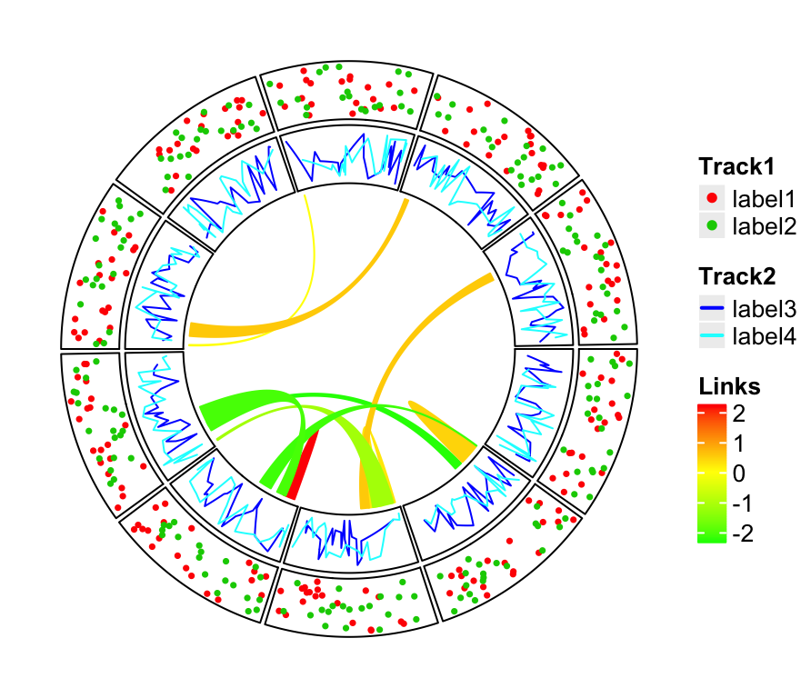
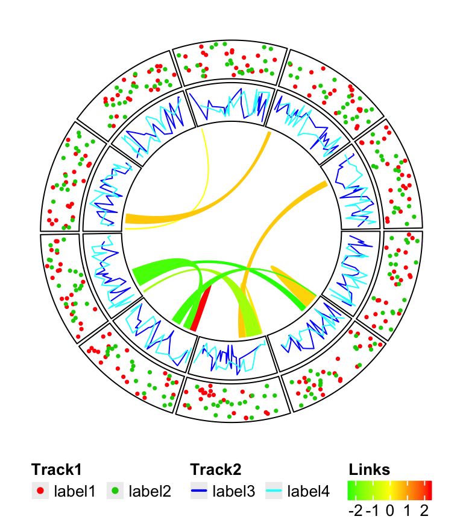

Chapter 3 Legends
circlize provides complete freedom for users to design their own graphics by implementing the self-defined function panel.fun. However one drawback arises that circlize is completely blind to users’ data so that one important thing is missing for the visualization which is the legend.
Although legends cannot be automatically generated by circlize, by using functionality from other R packages, it is just a few more work to really implement it. Here I will demonstrate how to customize legends and arrange to the circular plot.
As an example, a circular plot which contains two tracks and links inside the circle is generated. The first track will have a legend that contains points, the second track will have a legend that contains lines, and the links correspond to a continuous color mapping. The code is wrapped into a function so that it can be used repeatedly.
library(circlize)
col_fun = colorRamp2(c(-2, 0, 2), c("green", "yellow", "red"))
circlize_plot = function() {
set.seed(12345)
fa = letters[1:10]
circos.initialize(fa, xlim = c(0, 1))
circos.track(ylim = c(0, 1), panel.fun = function(x, y) {
circos.points(runif(20), runif(20), cex = 0.5, pch = 16, col = 2)
circos.points(runif(20), runif(20), cex = 0.5, pch = 16, col = 3)
})
circos.track(ylim = c(0, 1), panel.fun = function(x, y) {
circos.lines(sort(runif(20)), runif(20), col = 4)
circos.lines(sort(runif(20)), runif(20), col = 5)
})
for(i in 1:10) {
circos.link(sample(fa, 1), sort(runif(10))[1:2],
sample(fa, 1), sort(runif(10))[1:2],
col = add_transparency(col_fun(rnorm(1))))
}
circos.clear()
}In ComplexHeatmap package with version higher than 1.13.2, there is a Legend() function which customizes legends with various styles. In following code, legends for the two tracks and links are constructed. In the end the three legends are packed vertically by packLegend(). For more detailed usage of Legend() and packLegend(), please refer to their help pages.
library(ComplexHeatmap)
# discrete
lgd_points = Legend(at = c("label1", "label2"), type = "points",
legend_gp = gpar(col = 2:3), title_position = "topleft",
title = "Track1")
# discrete
lgd_lines = Legend(at = c("label3", "label4"), type = "lines",
legend_gp = gpar(col = 4:5, lwd = 2), title_position = "topleft",
title = "Track2")
# continuous
lgd_links = Legend(at = c(-2, -1, 0, 1, 2), col_fun = col_fun,
title_position = "topleft", title = "Links")
lgd_list_vertical = packLegend(lgd_points, lgd_lines, lgd_links)
lgd_list_vertical## frame[GRID.frame.1065]lgd_points, lgd_lines, lgd_links and lgd_list_vertical are all grob objects (graphical objects) defined by grid package, which you can think as boxes which contain all graphical elements for legends and they can be added to the plot by grid.draw().
circlize is implemented in the base graphic system while ComplexHeatmap is implemented by grid graphic system. However, these two systems can be mixed somehow. We can directly add grid graphics to the base graphics. (Actually they are two independent layers but drawn on a same graphic device.)
circlize_plot()
# next the grid graphics are added directly to the plot
# where circlize has created.
pushViewport(viewport(x = unit(2, "mm"), y = unit(4, "mm"),
width = grobWidth(lgd_list_vertical),
height = grobHeight(lgd_list_vertical),
just = c("left", "bottom")))
grid.draw(lgd_list_vertical)
upViewport()
Figure 3.1: Directly add grid graphics.
In Figure 3.1, the whole image region corresponds to the circular plot and the legend layer is drawn just on top of it. Actually you can see that one big problem is if there are many legends that the size for the legends is too big, they may overap to the circle. One solution is to split the legends into several parts and add each part to different corners in the plot (Figure ??).

Still it can not solve the problem and sometimes it even makes the plot so messed up. One better way is to split the image region into two parts where one part only for the circular plot and the other part for legends.
To mix grid graphics and base graphics, ther are two important packages to use: the grid package and gridBase package. grid is the base for making grid graphics as well as arranging plotting regions (or, viewport in grid term), and gridBase makes it easy to integrate base graphics into grid system.
Following code is straightforward to understand. Only one line needs to be noticed: par(omi = gridOMI(), new = TRUE) that gridOMI() calculates the outer margins for the base graphics so that the base graphics can be put at the correct place and new = TRUE to ensure the base graphics are added to current graphic device instead of opening a new one.
Here I use plot.new() to open a new graphic device. In interactive session, it seems ok if you also use grid.newpage(), but grid.newpage() gives error when building a knitr document.
library(gridBase)
plot.new()
circle_size = unit(1, "snpc") # snpc unit gives you a square region
pushViewport(viewport(x = 0, y = 0.5, width = circle_size, height = circle_size,
just = c("left", "center")))
par(omi = gridOMI(), new = TRUE)
circlize_plot()
upViewport()
pushViewport(viewport(x = circle_size, y = 0.5, width = grobWidth(lgd_list_vertical),
height = grobHeight(lgd_list_vertical), just = c("left", "center")))
grid.draw(lgd_list_vertical)
upViewport()
The legends can also be put at the bottom of the circular plot and it is just a matter how users arrange the grid viewports. In this case, all legends are changed to horizontal style, and three legends are packed horizontally as well.
lgd_points = Legend(at = c("label1", "label2"), type = "points",
legend_gp = gpar(col = 2:3), title_position = "topleft",
title = "Track1", nrow = 1)
lgd_lines = Legend(at = c("label3", "label4"), type = "lines",
legend_gp = gpar(col = 4:5, lwd = 2), title_position = "topleft",
title = "Track2", nrow = 1)
lgd_links = Legend(at = c(-2, -1, 0, 1, 2), col_fun = col_fun,
title_position = "topleft", title = "Links", direction = "horizontal")
lgd_list_horizontal = packLegend(lgd_points, lgd_lines, lgd_links,
direction = "horizontal")Similar code to arrange viewports.
plot.new()
pushViewport(viewport(x = 0.5, y = 1, width = circle_size, height = circle_size,
just = c("center", "top")))
par(omi = gridOMI(), new = TRUE)
circlize_plot()
upViewport()
pushViewport(viewport(x = 0.5, y = unit(1, "npc") - circle_size,
width = grobWidth(lgd_list_horizontal), height = grobHeight(lgd_list_horizontal),
just = c("center", "top")))
grid.draw(lgd_list_horizontal)
upViewport()